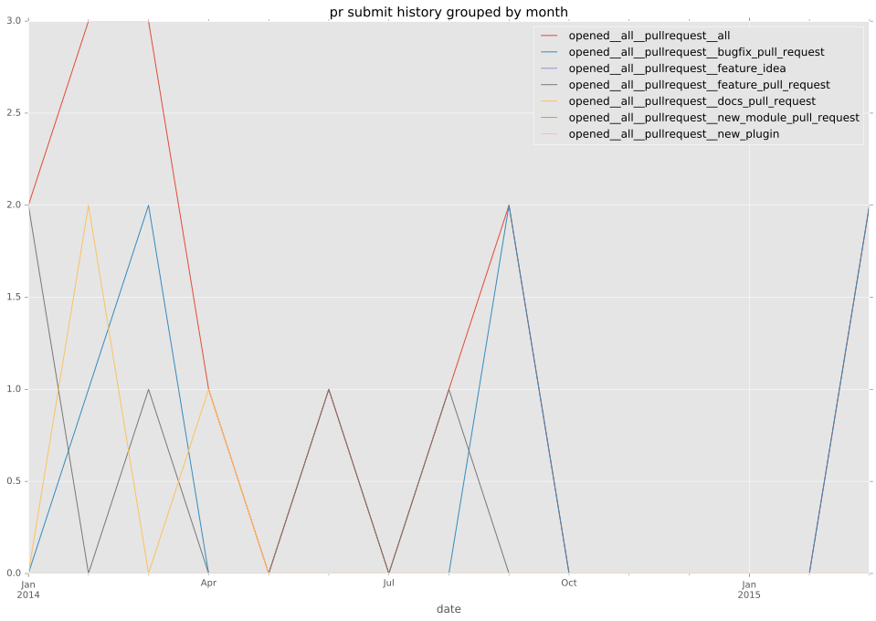
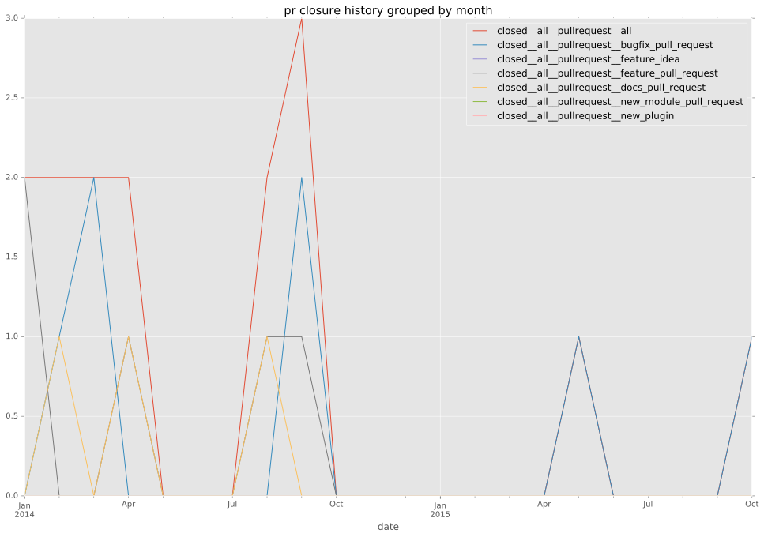

authors
- angstwad
maintainers
- sivel
contributors
- vmihailenco : 8 commits
- risaacson : 1 commits
- sivel : 17 commits
- Hypermanzer : 11 commits
- cgar : 1 commits
- angstwad : 47 commits
total issue counts
bugfix pull request: 9
pullrequest: 16
docs pull request: 2
feature pull request: 5
issue: 1
bug report: 1
issue history
pullrequest history


days open by issue type
feature pull request
count: 8
std: 25.1680069022
min: 0
max: 76
median: 6.5
mean: 16.5
all
count: 26
std: 92.3312848056
min: 0
max: 306
median: 5.0
mean: 53.8846153846
pullrequest
count: 0
std: nan
min: nan
max: nan
median: nan
mean: nan
docs pull request
count: 3
std: 36.9504172281
min: 37
max: 101
median: 101.0
mean: 79.6666666667
bugfix pull request
count: 14
std: 119.117727342
min: 0
max: 306
median: 0.0
mean: 73.5714285714
issue
count: 0
std: nan
min: nan
max: nan
median: nan
mean: nan
bug report
count: 1
std: nan
min: 0
max: 0
median: 0.0
mean: 0.0
closures grouped by total days open